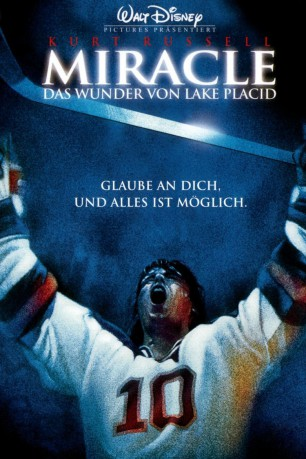

#3727 Miracle - Das Wunder von Lake Placid
Alternativ: Miracle
 
 IMDB-Wertung: 7.5 / 10
IMDB-Wertung: 7.5 / 10  Metascore: 0
Metascore: 0 
Herb Brooks (Kurt Russell) hat einen Traum: einmal die Goldmedaille mit dem US-Eishockeyteam bei den Olympischen Spielen zu gewinnen. Was ihm als Spieler nicht gelang, versucht er nun 20 Jahre später als Trainer. Für die Olympischen Winterspiele 1980 in Lake Placid stellt er eine bunt zusammengewürfelte Truppe aus jungen und unerfahrenen College-Spielern zusammen. In nur sieben Monaten muss Brooks sie zu einem Team formen, um gegen den ultimativen Gegner bestehen zu können, die als unschlagbar geltende Mannschaft der UdSSR. Drei Tage vor der Eröffnungsfeier in Lake Placid hat Brooks ein Testspiel gegen die Sowjetunion angesetzt, das seine Jungs mit 10:3 verlieren. Der Traum eines Sieges scheint in weite Ferne gerückt...
Jahr: 2004
Dauer: 135 Minuten
FSK:
Land: USA Studio: Buena Vista PicturesTonspuren:
Untertitel: Deutsch,
Auflösung: 720p (1280x528) Größe: 6717 MB
Genre: Drama, Sport, Geschichte, Biographie
Regisseur: Gavin O'Connor
Drehbuch: René Fallet
Soundtrack:
Darsteller:
 Kurt Russell als Herb Brooks
Kurt Russell als Herb Brooks Patricia Clarkson als Patti Brooks
Patricia Clarkson als Patti Brooks Noah Emmerich als Craig Patrick
Noah Emmerich als Craig Patrick Kenneth Welsh als Doc Nagobads
Kenneth Welsh als Doc Nagobads- Eddie Cahill als Jim Craig
- Patrick O'Brien Demsey als Mike Eruzione
- Michael Mantenuto als Jack O'Callahan
- Nathan West als Rob McClanahan
 Kenneth Mitchell als Ralph Cox
Kenneth Mitchell als Ralph Cox- Eric Peter-Kaiser als Mark Johnson
- Joseph Cure als Mike Ramsey
 Bill Mondy als Lou Nanne
Bill Mondy als Lou Nanne Tom Butler als Bob Allen
Tom Butler als Bob Allen Don S. Davis als Bob Fleming
Don S. Davis als Bob Fleming Michael Kopsa als Bruce Norris
Michael Kopsa als Bruce Norris Lisa Marie Caruk als Disco Girl
Lisa Marie Caruk als Disco Girl Malcolm Stewart als Donald Craig
Malcolm Stewart als Donald Craig Ellie Harvie als Margie
Ellie Harvie als Margie Fred Keating als Party Husband
Fred Keating als Party Husband Peter Kelamis als Reporter
Peter Kelamis als Reporter Daniel Bacon als Reporter
Daniel Bacon als Reporter Kwesi Ameyaw als Reporter
Kwesi Ameyaw als Reporter Philip Maurice Hayes als TV Reporter
Philip Maurice Hayes als TV Reporter- Tatiana Loutchaninova als Doc's Wife
 Peter Shinkoda als Japanese Athlete
Peter Shinkoda als Japanese Athlete- L. Harvey Gold als Announcer
 Beverley Breuer als Party Wife
Beverley Breuer als Party Wife- Sarah Hayward als Try-Outs Organizer
- Richard Yee als Team Photographer
 Ty Olsson als State Trooper
Ty Olsson als State Trooper- Ryan Walter als Referee
- David Short als I.O.C. Presenter
- Jim McKay als Himself
 Jerry Brown als Himself , archive footage, uncredited
Jerry Brown als Himself , archive footage, uncredited Jimmy Carter als Himself , archive footage, uncredited
Jimmy Carter als Himself , archive footage, uncredited- Betty Ford als Herself , archive footage, uncredited
 Gerald Ford als Himself , archive footage, uncredited
Gerald Ford als Himself , archive footage, uncredited Richard Nixon als Himself , archive footage, uncredited
Richard Nixon als Himself , archive footage, uncredited- Sean McCann als Walter Bush
- Bobby Hanson als Dave Silk
- Billy Schneider als Buzz Schneider
- Nate Miller als John 'Bah' Harrington
- Chris Koch als Mark Pavelich
- Kris Wilson als Phil Verchota
- Steve Kovalcik als Dave Christian
- Sam Skoryna als Steve Janaszak
- Pete Duffy als Bob Suter
- Nick Postle als Bill Baker
- Casey Burnette als Ken Morrow
- Scott Johnson als Steve Christoff
Datei: X:\2004(G-M)\Miracle - Das Wunder von Lake Placid (2004, FSK, 1280x528).mkv seit 27.05.2016
Festplatte: HD 2003-2004-2005(A-F)
 Es gibt insgesamt 41 Filme in der Gruppe '2004(G-M)'
Es gibt insgesamt 41 Filme in der Gruppe '2004(G-M)'